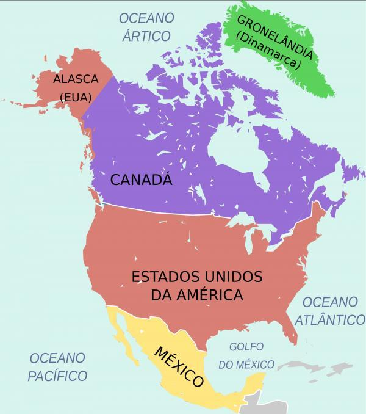

|  | America del Norte América del Norte o Norteamérica es una región del continente americano que se extiende en el hemisferio septentrional y occidente. Tiene una superficie de 24,7 millones de km2 y está conformado por los países de Canadá, Estados Unidos, México y Groenlandia, la isla más grande del mundo. Pause Remaining Time -4:40 Unmute × América del Norte limita con el océano glaciar Ártico al norte, con el Golfo de México y América Central al sur, con el océano Pacífico al oeste y con el océano Atlántico al este. Tiene una población aproximada de 500 millones de habitantes, que equivale al 6,2 % de la población mundial. La división de América del Norte, América Central y América del Sur fue establecida a partir de las diferencias estructurales que tiene el continente. América se divide en dos grandes masas continentales de forma triangular unidas por una porción de tierra angosta y alargada. El sector norte recibe el nombre de América del Norte, el sector sur América del Sur, y el istmo que los une se llama América Central. América del Norte tiene una superficie de 24.700.000 km2, lo que representa el 16.6 % de la superficie continental absoluta del planeta. Está conformado por Canadá, Estados Unidos, México y el territorio de Groenlandia, una isla ubicada en el norte del continente que depende políticamente de Dinamarca. |
La población total del continente es de aproximadamente 495 millones de habitantes, lo que representa el 6,2 % de la población mundial. La densidad de población es de 20 habitantes por kilómetro cuadrado. Esta densidad aumenta en las grandes ciudades estadounidenses, como Nueva York o Los Ángeles, y disminuye sensiblemente en las grandes áreas prácticamente deshabitadas del norte de Canadá y de Groenlandia. La población de cada país de América del Norte se divide de la siguiente manera: 1. Estados Unidos. 331 millones de habitantes. 2. México. 127 millones de habitantes. 3. Canadá. 38 millones de habitantes. 4. Groenlandia. 56.600 habitantes. |
|